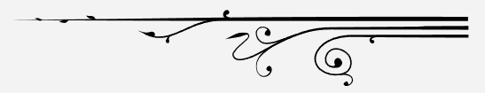

Nuestra historia
¿Cómo fue la creación de Marikeiks?
Marikeiks Bakery empieza en la cocina de la casa, ofreciendo bizcochos húmedos, sabores deliciosos y diseño personalizado para darle al cliente la experiencia de crear su propio pastel y disfrutar cuchareando una deliciosa torta. Marieiks Bakery, es una pastelería creada en el 2014 por María José, publicista, soñadora, con ganas de evolucionar y salir del sistema laboral con su propio proyecto.
El despido de una agencia le dio el empuje para crear su propio universo de pasteles, caramelos y diseño. Cuando este proyecto empezó a crecer y María José adquirió conocimientos en pastelería, decoración en azúcar, contabilidad, administración de empresas, manejo de redes y atención al cliente dejó de ser un proyecto, se convirtió en su life style y ESO es lo que hoy entrega Marikeiks, un estilo de vida y un pastel para llevar de regalo, para celebrar tu cumpleaños, o tu matrimonio, incluso para decirle adiós a un ser amado.


Los pasteles te acompañan siempre.